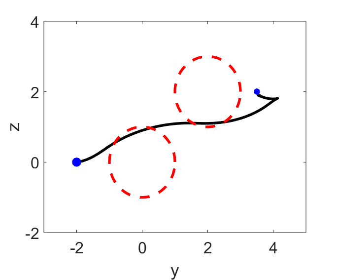

Vehicle
Example
Vehicle/
Problem Description
-
The state vector of the vehicle is x = [y,z , v ,\theta]^{T}\in\mathbb{R}^{4}, where (y,z) is the position coordinate, v is the velocity, and \theta is the heading angle.
-
The input vector is u=[F,s]^T, where F is the acceleration force and s is the steering torque. The control input is bounded by [-5,-1]^T \leq u \leq [5,1]^T.
-
The vehicle starts from position (-2,0). It's aim is to reach (3.5,2) while avoiding two obstacles with positions (0,0) and (2,2). These constraints are formulated as y^2+z^2\geq 1 and (y-2)^2+(z-2)^2\geq 1.
-
The dynamics of the vehicle are given by the following equations (m: mass and I: moment of inertia):
OCP in ParNMPC
First, the state constraints are transfered into y^2+z^2 = C_{s1} and (y-2)^2+(z-2)^2 = C_{s2} with C_{s1}\geq 1 and C_{s2}\geq 2. Next, C_{s1}\geq 1 and C_{s2}\geq 2 are softened by introducing slack variables C_{ss1} and C_{ss2}.
The underlying OCP defined in ParNMPC is formulated as:
- State: x=[y,z , v ,\theta]^T.
- Input: u=[F,s,C_{s1},C_{ss1},C_{s2},C_{ss2}]^T with u_{max}=[5, 1, \infty, \infty, \infty, \infty]^T and u_{min} = [-5, -1, -\infty, 0, -\infty, 0 ]^T.
- Parameter: p=\gamma, where \gamma>0 is the barrier parameter.
- Equality constraint C(u,x,p) = [y^2 + z^2 - C_{s1},(y-2)^2 + (z-2)^2 - C_{s2}]^T.
- Cost function L(u,x,p) = L_{tracking}(u,x,p) + L_{penalty}(u,x,p), where L_{tracking}(u,x,p) = \frac{1}{2}\|x-x_{ref}\|_{Q}^2+\frac{1}{2}\|u-u_{ref}\|_{R}^2 with x_{ref}=[3.5,2,0,0], and L_{penalty}(u,x,p)=1000(C_{ss1}^2 +C_{ss2}^2) is the penalty function.
- Polytopic function (linear constraint) G = [C_{s1} - C_{ss1},C_{s1} + C_{ss1}, C_{s2} - C_{ss2}, C_{s2} + C_{ss2}]^T with G_{max}=[\infty,\infty,\infty,\infty]^T and G_{min} = [-\infty,1,-\infty,1]^T.
- f(u,x,p) is shown before.
- Prediction horizon T=3 s.
- Number of the discritization grids N=48.
- Discretization method: Euler.
Closed-loop Simulation using ParNMPC
Closed-loop simulation result:

Step 1. NMPC problem formulation
See Workflow of ParNMPC > NMPC Problem Formulation.
Example
Vehicle/NMPC_Problem_Formulation.m
Step 2. Code generation and deployment in Simulink
See Workflow of ParNMPC > Code Generation and Deployment > Simulink.
-
Code generation
Example
Vehicle/Simu_Simulink_Setup.m -
Deployment
Example
Vehicle/Simu_Simulink.slx